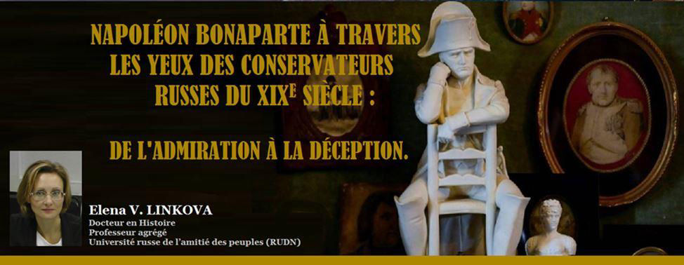
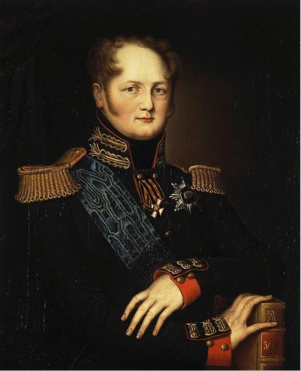
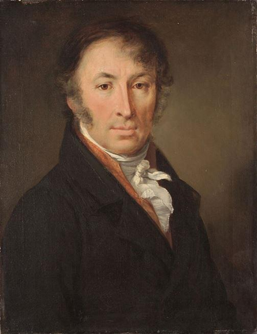
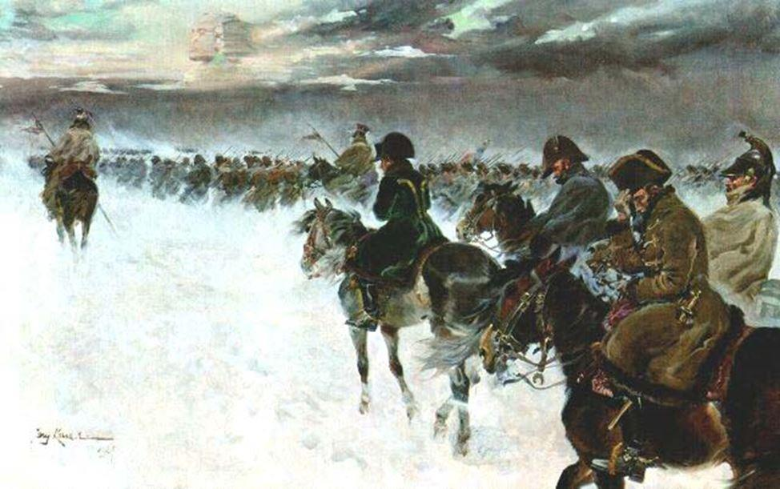
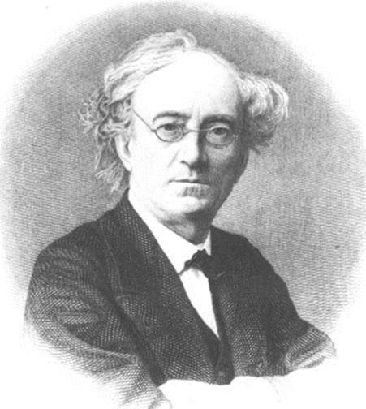
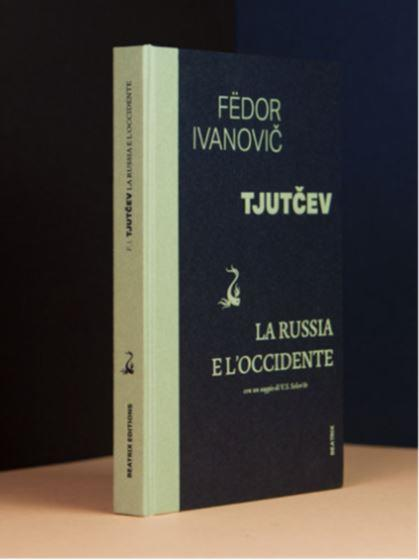

Napoléon Bonaparte à travers les yeux des conservateurs russes du XIXe siècle : de l’admiration à la déception
par Elena V. LINKOVA

Il n'est pas exagéré de dire que dans la Russie moderne, Napoléon Bonaparte reste encore l'un des Français les plus célèbres, partageant « la palme de la primauté » avec Charles de Gaulle. De plus, un intérêt similaire pour la personnalité de Napoléon, qui s'est développé à la fin du XVIIIe et au début du XIXe siècle, est resté pratiquement inchangé tout au long du XIXe siècle. Au XXe siècle, les idées de bonapartisme, des réflexions sur le rôle de la personnalité dans l'histoire ont également attiré l'intérêt de la communauté scientifique. En outre, pour la Russie, le nom de Napoléon Bonaparte est inextricablement lié à l'histoire glorieuse du pays, à la Guerre Patriotique de 1812 et les campagnes à l'étranger de l'armée russe. Enfin, c'est l'époque napoléonienne qui est devenue à bien des égards le point clé du processus de la formation et du développement de la pensée politique russe, en particulier de sa direction conservatrice.
Les guerres contre Napoléon ont contribué à la définition de la vision du monde de la noblesse russe. Les événements historiques du début du XIXe siècle ont conduit à des changements non seulement dans la position internationale de la Russie et la politique intérieure de l'empereur Alexandre Ier, mais aussi dans la vie spirituelle de la société russe, la mentalité des jeunes nobles. Selon les conservateurs russes, les campagnes anti-napoléoniennes et la Guerre Patriotique de 1812 ont révélé le plus complètement l'essence des relations de l'Occident avec la Russie.
Il convient de noter que ce sont des guerres avec les pays d'Europe Occidentale qui sont devenues pour les conservateurs russes le principal moyen de perception et d'évaluation de la politique des pays de l'Europe Occidentale et de ses dirigeants.
Essayons de retracer l'évolution de l'attitude envers Napoléon parmi les penseurs conservateurs russes. Le processus de la compréhension de la personnalité et des activités de l'empereur des Français a eu lieu tout au long du XIXe siècle, la perception a changé en fonction de la situation internationale, de la transformation du discours conservateur.
Ici, il est important d'expliquer pourquoi nous nous tournons vers la direction conservatrice, en essayant de déterminer l'attitude à l'égard de Napoléon dans la société russe. Dans quelle mesure les vues des conservateurs sont-elles représentatives dans ce contexte? Le conservatisme russe est l'une de ces directions de la pensée sociale et politique, qui s'est formée idéologiquement dans des œuvres de penseurs du début du XIXe siècle. Et c'est les conservateurs qui ont réussi à présenter un projet pas seulement du développement intérieur de la Russie, mais ont identifié le vecteur de la politique étrangère du pays, qui de manière adéquate reflétait des tâches géopolitiques historique de la Russie ainsi que de ses buts dans des conditions modernes. Des projets socio-politiques des conservateurs, ainsi que leurs doctrines de la politique étrangère, ont évolué tout au long du XIXe siècle. En analysant le rôle et la place de la Russie sur la scène internationale, les conservateurs se sont tournés vers l'époque des guerres napoléoniennes, y trouvant des arguments pour prouver leurs constructions historiosophiques et géopolitiques.
La personnalité et la carrière de Napoléon Bonaparte ont attiré l'attention des penseurs, historiens et publicistes russes à la fin du XVIIIe siècle, quand on voit l'ascension de l'étoile du futur empereur. Les premiers conservateurs russes ont vu en Napoléon la force capable de faire face à la révolution, de rétablir l'ordre en France.
Dans 1798-1803 dans les cercles conservateurs russes il y avait la sympathie et le respect envers le dirigeant français, et pour la jeune génération de la noblesse russe, le pont d'Arcole est resté une sorte de symbole de l'intrépidité et de l'exploit. Par exemple, en 1802 dans le « Vestnik Evropy »1, Napoléon a été décrit comme un véritable héros et pacificateur : « Enfin, le paix ... Les horreurs de la guerre de dix ans ont disparu, la guerre qui a ébranlé les fondations de nombreuses puissances et a menacé de détruire encore plus de destructions... qui a répandu sa flamme sur toutes les autres parties du monde, et qui sera glorieuse dans les chroniques sous le terrible nom de la guerre révolutionnaire. Son caractère spécial était l'excitation générale des esprits et des cœurs »2.
De plus, les conservateurs pensaient que c'était grâce à Napoléon, que la France est de nouveau entrée dans le concert des grandes puissances, regagnant le statut international perdu pendant la Révolution. Tandis que les rois ont mené des « guerres de luxe » et dévasté son pays, « Bonaparte a donné aux Français le nom d'une grande nation »3. Dans ces mots – toute l'essence de l'attitude de la Russie envers la France, qui à ce moment était perçue par le gouvernement russe comme un ennemi idéologique et pas géopolitique.
Il est à noter que pour les penseurs russes, la victoire sur la Révolution était essentiellement plus importante que les considérations géopolitiques. La France tout au long du XVIIIe siècle a soutenu la Suède, la Pologne, l'Empire Ottoman dans leurs discours anti-russes, incitant parfois à des actions décisives. Mais la Révolution représentait une menace plus grave, difficile à gérer par des moyens traditionnels : militaires ou diplomatiques.
Par conséquent, selon Nicolai Karamzin, l'un des dirigeants du parti conservateur russe et l'historien de la cour, le futur empereur des Français était avant tout un pacificateur de la Révolution, car c'était grâce à lui que les règles révolutionnaires ont disparu et la France est devenue une véritable monarchie. Il est intéressant de noter que les idées de Karamzin ressemblent à celles exprimées par l'impératrice russe Catherine II en janvier 1791. Elle a prononcé : « les méchants ont pris le pouvoir et transformeront bientôt la France en Gaule de l'époque de César. Mais César les a pacifiés. Quand César viendra-t-il ?
Oh, il viendra, ne doutez pas ; il viendra !»4. Et voici, il est apparu dans la personne de Napoléon Bonaparte, ses talents politique et militaire méritaient l'admiration. Le célèbre général Alexandre Souvorov a conclut prophétiquement : « ...tant que le général Bonaparte maintiendra la présence de l'esprit, il sera le vainqueur. Les grands talents militaires lui ont été attribués. Mais si, dans son malheur, il se précipite dans un tourbillon politique, s'il change l'unité de la pensée, il périra »5.
Bien sûr, l'invasion de Napoléon à Moscou a changé l'attitude envers l'empereur français. Dans la société russe, en particulier parmi sa partie conservatrice, la gallophobie s'est intensifiée, des appels ont été lancés pour refuser l'utilisation du français comme principal moyen de communication parmi la noblesse. L’amiral Alexandre Shishkov a compris l'invasion de Napoléon comme une sorte de châtiment envoyé par le Dieu à la société russe pour une longue période de gallomanie, pour l'oubli des traditions de sa propre culture. « Dieu ne nous a pas punis, mais il a envoyé sa miséricorde à nous, si nos villes brûlées nous rendent Russes »6. Une telle affirmation était caractéristique des conservateurs russes dans les années 1830-1850, lorsque l'invasion de Napoléon était considérée comme bénéfique dans la formation de la conscience nationale.
D'autre part, c'est pendant les guerres avec Napoléon en Russie qu'une attitude critique envers l'empereur des français s’est formée. Peu à peu son image s’est évaluée progressivement dans la conscience publique russe du pacificateur de la Révolution en son enfant.
En analysant l’héritage épistolaire des historiens et publicistes des années 1820-1830, on peut conclure que l’image de Napoléon Bonaparte s'est transformée en une sorte de synthèse de l'image de l'Europe, avec laquelle la Russie, historiquement, a mené la lutte et à laquelle il a été contraint de résister en 1812. Tout comme des émigrés français au service de la Russie, les conservateurs russes ont commencé à percevoir Napoléon le mauvais génie qui avait osé menacer le principe chrétien.
Les plans démoniaques de Napoléon et l'effondrement de l'armée française, selon les conservateurs russes, étaient condamnés, car l’empereur des Français était face à face avec la Russie, ne tenant compte ni des traditions orthodoxes du peuple russe, ni de la force de son esprit, ni du patriotisme. « Où attendait-il son coup décisif, victorieux...? - a posé à ses lecteurs la question rhétorique la revue « Russkij vestnik », discutant des raisons de la défaite des Français. - Ce coup attendait Napoléon à Moscou... Exterminant Moscou, nos ennemis criaient : est-il possible de jeter la Capitale de sept siècles! Est-il possible de donner à la ruine de magnifiques palais! Ne comprenant pas le véritable esprit du Russe, ils ont imaginé que pour préserver les pierres, les Russes sacrifieraient la gloire et l'honneur de la patrie »7.
D'autre part, l'image négative de Napoléon s'est crée en Russie, bien avant les événements de 1812, par exemple, en 1804-1805. Au cours de la formation de la troisième coalition anti-napoléonienne la propagande s'est intensifiée, et Bonaparte lui-même a été trahi anathème de l'église orthodoxe russe. Et il ne s'agit pas seulement de la propagande russe, mais aussi de la propagande anglaise, qui représentait Napoléon comme un ennemi commun des nations européennes. «Si l'anathème était destiné au peuple, les pamphlets devaient avoir un effet sur la noblesse»8, qui appréciait beaucoup l'opinion anglaise. Les publicistes des revues « Russkij vestnik » et « Syn Otechestva », n'ont pas lésiné en définitions cruelles de Napoléon. Voici quelques-uns d'entre eux : « le démon du péché », « le serviteur de la fausse gloire infernale », « le vaisseau de tous les maux », « le monstre de la nature », « le fils féroce de l'enfer »9.
En même temps, les penseurs russes n'ont jamais minimisé la grandeur de la personnalité de Napoléon Bonaparte, ils ont écrit que la Russie avait un adversaire digne et fort, à la fois militairement et idéologiquement. Sergei Glinka a souligné l'importance et l'échelle de la personnalité et les activités de l'empereur français, car « le destin d'un brave homme de notre temps ; le destin de Napoléon dans le premier quart du XIXe siècle a été lié avec tous les pays Européens et tous les peuples qui habitent l'Europe »10. Mais les représentants du conservatisme russe ont été les premiers penseurs qui ont soulevé la question des origines des aspirations hégémoniques de Napoléon Bonaparte, qui a commencé sa carrière militaire en tant que héros, mais sous l'influence de l'orgueil et des ambitions politiques, s'est transformé en un ennemi condamné par tous.
Il est important de noter que les penseurs du premier quart du XIXe siècle n'étaient pas enclins à rechercher des raisons internationales, économiques et politiques pour l'élévation de Napoléon ou sa défaite écrasante.
De plus, les contradictions historiques qui séparaient traditionnellement la Russie et la France sur la scène internationale, par exemple la question d’Oriente, n'ont pas été mentionnées. La source de la confrontation, selon les vues conservatrices, était l'orgueil et les ambitions exorbitantes de Napoléon, avec lesquels il n'a pas réussi ou n'a pas voulu faire face. En outre, «...avec des cris si forts et solennels de flatterie; avec une telle servilité agenouillée; Napoléon ne pouvait-il pas croire que le destin de l'univers était dans ses mains et se dirigeait vers les rives du Niémen, ne pouvait-il pas dire « La fatalité entraîne les Russes; que les destins s’accomplissent!»11
Dans la conscience publique, l'idée des qualités particulières et clairement anti-chrétiennes de Napoléon était enracinée. Des penseurs russes du milieu du XIXe siècle – Ivan Aksakov, Fédor Tutchev, etc. – ont développé l'idée que Napoléon était un produit de son temps, un homme qui était mené par ses passions et ses ambitions. Et au cœur des actions et des idées de l'empereur français était la Philosophie des Lumières, proclamant la liberté illimitée de l'individu12.
L'Europe, incarnée par l'empereur français, a perdu ses valeurs chrétiennes, les jetant sur l'autel des idées de liberté, de révolution et d'égalité imaginaire. Voilà pourquoi la guerre avec Napoléon était perçue non seulement comme une bataille militaire mais aussi spirituelle et politique, la bataille de la Russie avec l'Europe unie, qui s'opposait traditionnellement à l'état russe. Et dans cette lutte historiquement conditionnée, la Russie a remporté la victoire grâce à ses valeurs spirituels, à la bonne organisation politique et sociale.
Fédor Tutchev a consacré à Napoléon un chapitre de son traité inachevé «La Russie et l'Occident», ainsi que son poème « Napoléon ». Le penseur a réfléchi à plusieurs reprises sur la personnalité de l'empereur dans ses lettres. Dans la représentation de Fédor Tutchev, l'image de l'empereur des Français était inextricablement liée à la guerre patriotique, qui, en faisant des sacrifices, du chagrin et de la destruction, a démontré l'énorme potentiel économique et spirituel de la Russie.
Et le pouvoir du leader français est devenu une continuation du développement de la Révolution, avec laquelle la Russie a lutté à la fois idéologiquement et diplomatiquement. En conséquence, la conclusion du penseur semble logique. Selon Tutchev « l'ennemi personnel de Napoléon est l'Angleterre. Et pourtant, il s'est écrasé sur la Russie. Car c'est la Russie qui était son véritable adversaire – la lutte entre eux était la lutte entre l'Empire légitime et la Révolution couronnée »13. Napoléon a cherché à légitimer son pouvoir, «a essayé dans son visage de faire couronner la Révolution»14, ce qui s'est avéré impossible.
Ainsi, les conservateurs russes de la première moitié du XIXe siècle se sont souvent tournés vers l'époque napoléonienne. Cela était dû non seulement à l'intérêt historiosophique, mais aussi au fait que la plupart des gens de cette génération étaient des enfants lors de « l'orage de l'année 1812 », qui a sérieusement affecté le développement ultérieur du pays.
Quant à la seconde moitié du XIXe siècle, la guerre Patriotique de 1812 a certainement perdu la netteté de la perception qui pouvait être observée à l'époque précédente. Cependant, les penseurs russes se sont tournés vers l'image de Napoléon Bonaparte dans les années 1850-1890. Ses activités et ses idées ont été comparées à son descendant, Napoléon III, et souvent cette comparaison n'était pas en faveur de ce dernier. Les penseurs ont établi des parallèles entre la Guerre Patriotique de 1812, lorsque l'Europe, unie par Napoléon Bonaparte, s'est opposée à la Russie, et la guerre de Crimée de 1853-1856, qui a de nouveau uni les pays occidentaux dans la lutte contre la Russie.
Cependant, non seulement de telles idées se sont reflétées dans la rhétorique conservatrice russe de ces années. Ainsi, à l'époque de la signature de l'Union russo-française de 1893, la presse conservatrice soulevait des questions de proximité entre les deux pays, malgré les différences politiques et les épisodes de contradictions. Dans la revue « Russkoe obozrenie », on a évoqué «qu’on ne peut guère douter que nous comprenions mieux la France que la Russie»15.
Les auteurs de la revue « Russkoe obozrenie » ont remarqué des tendances intéressantes liées au processus de formation de l'Union russo-française. Par exemple, ils ont souligné que la Russie est dans une position plus avantageuse, il sera plus facile pour elle de connaître la France, d'abord parce que « la question nationale en France est beaucoup moins complexe que la question nationale en Russie », d'ailleurs « nous suivons depuis longtemps, tout un siècle, attentivement et avec le plus grand intérêt tout ce qui concerne non seulement l'histoire extérieure, politique, mais aussi intérieure, morale du peuple Français »16. La noblesse russe tout au long du XVIIIe siècle s'intéressait vivement à la culture française et les héros de la France devenaient à cette époque les héros de la jeunesse russe. Napoléon Bonaparte et ses victoires, les idées des Lumières français et des révolutionnaires – tout cela a attiré l'attention de la couche sociale qui, après avoir connu l'engouement pour la France et l'Europe dans son ensemble, s'est finalement tournée vers la Russie, son histoire et sa culture17. À cet égard, Napoléon Bonaparte et son époque étaient une sorte de lien entre la Russie et la France. En outre, comme l'a justement noté les conservateurs russes de la seconde moitié du XIXe siècle, c'est les guerres napoléoniennes et la victoire de la Russie en 1812, qui ont donné la puissante impulsion au développement de la conscience nationale russe, ont conduit à la cristallisation des principaux axes de la pensée sociale de la Russie, ont considérablement influencé le développement de la culture russe et changé la position du pays sur la scène internationale.
E.L.
NOTES ET RÉFÉRENCES
1. Le Traité d'Amiens a été conclu le 25 mars 1802.
2. Napoleon Bonapart: Pro et contra. Lichnost' i dejanija Napoleona Bonaparta v ocenkah rossijskih issledovatelej. Antologija. [Napoléon Bonaparte: Pro et contra. La personnalité et les actes de Napoléon Bonaparte dans les évaluations des chercheurs russes. Anthologie]. Saint-Pétersbourg, 2012. P. 65. [En russe].
3. Ibid. P. 87.
4. Napoleon Bonapart: Pro et contra. Lichnost' i dejanija Napoleona Bonaparta v ocenkah rossijskih issledovatelej. Antologija. [Napoléon Bonaparte: Pro et contra. La personnalité et les actes de Napoléon Bonaparte dans les évaluations des chercheurs russes. Anthologie]. Saint-Pétersbourg, 2012. P. 18. [En russe].
5. Ibid. P. 19.
6. Shishkov A.S. Zapiski, mnenija i perepiska admirala A.S. Shishkova. [Notes, opinions et correspondance de l'amiral A.S. Shishkov]. Izdanie N. Kiseleva i Ju. Samarina. V. 2. Berlin, 1870. P. 327. [En russe].
7. Russkij vestnik. 1815. Livre 4. P. 63. [En russe].
8. Napoleon Bonapart: Pro et contra. Lichnost' i dejanija Napoleona Bonaparta v ocenkah rossijskih issledovatelej. Antologija. [Napoléon Bonaparte: Pro et contra. La personnalité et les actes de Napoléon Bonaparte dans les évaluations des chercheurs russes. Anthologie]. Saint-Pétersbourg, 2012. P. 127. [En russe].
9. Napoleon Bonapart: Pro et contra. Lichnost' i dejanija Napoleona Bonaparta v ocenkah rossijskih issledovatelej. Antologija. [Napoléon Bonaparte: Pro et contra. La personnalité et les actes de Napoléon Bonaparte dans les évaluations des chercheurs russes. Anthologie]. Saint-Pétersbourg, 2012. P. 129. [En russe].
10. Glinka S.N. Zapiski o Moskve i o zagranichnyh proisshestvijah ot ishoda 1812 do poloviny 1815 goda [Notes sur Moscou et sur les incidents à l'étranger de l'exode de 1812 à la moitié de 1815]. Saint-Péterbourg, 1837. Pp. 221-222. [En russe]
11. Glinka S.N. Zapiski o Moskve i o zagranichnyh proisshestvijah ot ishoda 1812 do poloviny 1815 goda [Notes sur Moscou et sur les incidents à l'étranger de l'exode de 1812 à la moitié de 1815]. Saint-Péterborg, 1837. P. 224. [En russe]
12. Linkova E. Vneshnepoliticheskij kurs Nikolaja I v ocenkah otechestvennyh konservatorov pervoj poloviny XIX v. [La politique étrangère de Nicolas Ier dans les conceptions des conservateurs russes dans la première moitié du XIXème siècle] // Bulletin de l'Université de la Russie de l'amitié des peuples. La série «Histoire de la Russie». Moscou, № 1, 2014, Pp. 17-24. [En russe]
13. Tutchev F.I. Polnoe sobranie sochinenij. Pis'ma. V 6-ti tomah. T. 3. [Œuvres complètes. Lettres. En 6 volumes. Vol. 3] Moscou, 2003. P. 197. [En russe]
14. Ibid.
15. Russkoe obozrenie. 1890. № 6. Juin. P. 832.
16. Russkoe obozrenie. 1890. № 6. Juin. P. 832.
17. Ibid.
Elena V. Linkova, PhD en histoire, professeur agrégé, Université russe de l'amitié des peuples (RUDN University), Moscou, Russie. Ses recherches portent actuellement sur l'histoire du conservatisme et l'histoire intellectuelle de la Russie aux XVIII-XIX siècles, de pensée géopolitique russe, sur l'histoire des relations diplomatiques et culturelles entre la Russie et la France. Elle est également la Directrice du Centre de Francophonie de RUDN et coordinatrice du programme de Double master conjointement avec l'Université Grenoble-Alpes (France). Courriel: linkova_ev@pfur.ru
Partager cette page